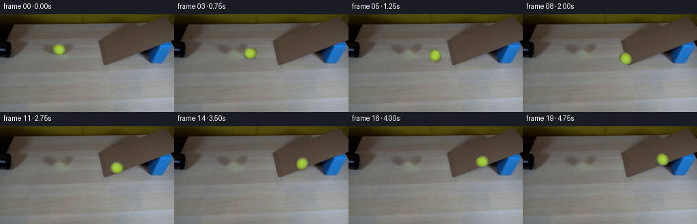
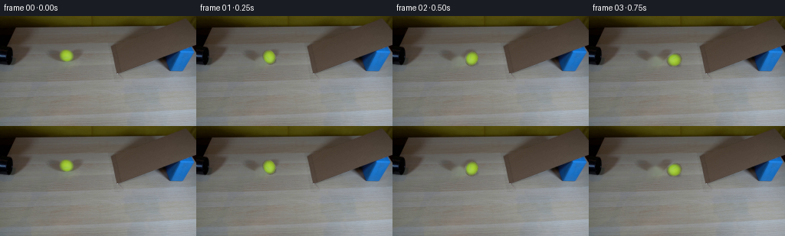

CODING AGENTS AS PIXEL WORLD MODELS
traex/GPT-5.6-Sol · 0020
点击播放 · 原生 RGB 像素
逐轮保存的候选
回放视频、检查图与代码变化。
每份候选均可单独播放。实际图片检查记录在下方工具轨迹中。
候选 01播放与检查图
点击播放 · 原生 RGB 像素


展开代码变化
--- 上一保存版本
+++ 本次保存版本
@@ -0,0 +1,190 @@
+"""Generate the requested locked-off tennis-ball/ramp RGB sequence.
+
+The source frame already contains the ball after it has emerged from the pipe.
+Everything except the moving ball is therefore retained directly from the source.
+"""
+
+from pathlib import Path
+
+import cv2
+import numpy as np
+from PIL import Image
+
+import artifact_io
+
+
+CASE_DIR = Path(__file__).resolve().parent
+W, H = 256, 144
+
+
+def smoothstep(a: np.ndarray) -> np.ndarray:
+ return a * a * (3.0 - 2.0 * a)
+
+
+def source_ball_sprite(frame: np.ndarray):
+ """Extract a softly matted sprite from the tennis ball in frame zero."""
+ # The ellipse is based on the connected yellow-green component local to the
+ # ball. Keeping its original pixels retains the photographed fuzzy felt,
+ # illumination and compression texture.
+ x0, y0, x1, y1 = 73, 39, 101, 66
+ rgb = frame[y0:y1, x0:x1].copy()
+ yy, xx = np.mgrid[y0:y1, x0:x1].astype(np.float32)
+ cx, cy = 86.35, 51.75
+ d = np.sqrt(((xx - cx) / 10.15) ** 2 + ((yy - cy) / 9.25) ** 2)
+ alpha = np.clip((1.055 - d) / 0.105, 0.0, 1.0)
+ alpha = smoothstep(alpha)
+
+ # Color evidence gently trims ellipse pixels that clearly belong to the
+ # gray ramp, while leaving the antialiased ball boundary intact.
+ hsv = cv2.cvtColor(rgb, cv2.COLOR_RGB2HSV)
+ chroma = np.clip((hsv[..., 1].astype(np.float32) - 19.0) / 38.0, 0.0, 1.0)
+ evidence = np.maximum(chroma, np.clip((0.98 - d) / 0.12, 0.0, 1.0))
+ alpha *= smoothstep(evidence)
+ return rgb, alpha.astype(np.float32), (cx - x0, cy - y0)
+
+
+def clean_background(frame: np.ndarray) -> np.ndarray:
+ """Reconstruct the small area hidden by the original ball and its shadow."""
+ yy, xx = np.mgrid[:H, :W]
+ # Slightly wider than the colored component to include its contact shadow.
+ mask = ((((xx - 86.35) / 11.8) ** 2 + ((yy - 52.1) / 10.7) ** 2) < 1).astype(np.uint8) * 255
+ # TELEA follows the local low-frequency gray cardboard texture particularly
+ # well here. A tiny blur only inside the hole suppresses radial inpaint marks.
+ bgr = cv2.cvtColor(frame, cv2.COLOR_RGB2BGR)
+ filled = cv2.inpaint(bgr, mask, 3.0, cv2.INPAINT_TELEA)
+ filled_rgb = cv2.cvtColor(filled, cv2.COLOR_BGR2RGB)
+ blurred = cv2.GaussianBlur(filled_rgb, (3, 3), 0.55)
+ core = cv2.erode(mask, np.ones((3, 3), np.uint8), iterations=1) > 0
+ filled_rgb[core] = blurred[core]
+ out = frame.copy()
+ out[mask > 0] = filled_rgb[mask > 0]
+ return out
+
+
+def motion_positions() -> list[tuple[float, float, float, float]]:
+ """Integrate rolling motion in the two visible surface directions.
+
+ Returns x, y, accumulated path distance and radius for all 20 frames. The
+ first section is the tabletop run from the pipe. At the toe of the ramp the
+ screen-space direction changes to follow the photographed incline. Rolling
+ friction and gravity on the uphill section provide natural deceleration.
+ """
+ p = np.array([86.35, 51.75], np.float64)
+ toe = np.array([156.0, 66.25], np.float64)
+ table_dir = toe - p
+ table_dir /= np.linalg.norm(table_dir)
+ ramp_dir = np.array([1.0, -0.363], np.float64)
+ ramp_dir /= np.linalg.norm(ramp_dir)
+
+ dt = 0.25
+ speed = 34.0 # pixels / second at frame zero
+ distance = 0.0
+ on_ramp = False
+ result = []
+ for index in range(20):
+ radius = 9.45 - (0.40 * max(0.0, (p[0] - toe[0]) / 65.0))
+ result.append((float(p[0]), float(p[1]), distance, radius))
+ if index == 19:
+ break
+
+ remaining = speed * dt
+ while remaining > 1e-7:
+ if not on_ramp:
+ to_toe = float(np.dot(toe - p, table_dir))
+ if remaining >= to_toe:
+ p = toe.copy()
+ distance += to_toe
+ remaining -= to_toe
+ on_ramp = True
+ else:
+ p += table_dir * remaining
+ distance += remaining
+ remaining = 0.0
+ else:
+ p += ramp_dir * remaining
+ distance += remaining
+ remaining = 0.0
+
+ # Mild rolling resistance on the table, stronger gravity opposing the
+ # ball once it starts climbing the ramp.
+ deceleration = 1.4 if not on_ramp else 8.2
+ speed = max(0.0, speed - deceleration * dt)
+ return result
+
+
+def add_shadow(canvas: np.ndarray, cx: float, cy: float, radius: float, on_ramp: bool):
+ """Composite a soft, close contact shadow underneath the rolling ball."""
+ scale = 4
+ ph, pw = 26 * scale, 34 * scale
+ layer = np.zeros((ph, pw), np.float32)
+ center = (pw // 2 + (2 if not on_ramp else 1) * scale,
+ ph // 2 + (6 if not on_ramp else 5) * scale)
+ axes = (int(radius * 0.79 * scale), int(radius * 0.26 * scale))
+ angle = 11 if not on_ramp else -20
+ cv2.ellipse(layer, center, axes, angle, 0, 360, 0.30, -1, cv2.LINE_AA)
+ layer = cv2.GaussianBlur(layer, (0, 0), 1.45 * scale)
+ layer = cv2.resize(layer, (pw // scale, ph // scale), interpolation=cv2.INTER_AREA)
+
+ left = int(round(cx)) - layer.shape[1] // 2
+ top = int(round(cy)) - layer.shape[0] // 2
+ x0, y0 = max(0, left), max(0, top)
+ x1, y1 = min(W, left + layer.shape[1]), min(H, top + layer.shape[0])
+ a = layer[y0 - top:y1 - top, x0 - left:x1 - left, None]
+ canvas[y0:y1, x0:x1] = np.clip(
+ canvas[y0:y1, x0:x1].astype(np.float32) * (1.0 - a), 0, 255
+ ).astype(np.uint8)
+
+
+def add_ball(canvas: np.ndarray, sprite: np.ndarray, alpha: np.ndarray,
+ center_in_sprite: tuple[float, float], cx: float, cy: float,
+ path_distance: float, radius: float):
+ """Rotate, scale and alpha-composite the source ball at a new location."""
+ sh, sw = alpha.shape
+ base_radius = 9.45
+ scale = radius / base_radius
+ # Clockwise image rotation agrees with rightward rolling. The textured source
+ # is subtle, so this reads as felt rotation rather than a spinning highlight.
+ angle = -np.degrees(path_distance / base_radius)
+ matrix = cv2.getRotationMatrix2D(center_in_sprite, angle, scale)
+ matrix[0, 2] += cx - center_in_sprite[0]
+ matrix[1, 2] += cy - center_in_sprite[1]
+
+ premul = sprite.astype(np.float32) * alpha[..., None]
+ moved_a = cv2.warpAffine(alpha, matrix, (W, H), flags=cv2.INTER_CUBIC,
+ borderMode=cv2.BORDER_CONSTANT, borderValue=0)
+ moved_p = cv2.warpAffine(premul, matrix, (W, H), flags=cv2.INTER_CUBIC,
+ borderMode=cv2.BORDER_CONSTANT, borderValue=0)
+ moved_a = np.clip(moved_a, 0.0, 1.0)
+ moved_p = np.clip(moved_p, 0.0, 255.0)
+
+ # Prevent cubic interpolation from creating a dark fringe at the matte edge.
+ safe = moved_a > 1e-4
+ moved_rgb = np.zeros_like(moved_p)
+ moved_rgb[safe] = moved_p[safe] / moved_a[safe, None]
+ a = moved_a[..., None]
+ composed = canvas.astype(np.float32) * (1.0 - a) + moved_rgb * a
+ canvas[:] = np.clip(composed + 0.5, 0, 255).astype(np.uint8)
+
+
+def generate() -> np.ndarray:
+ first = np.asarray(Image.open(CASE_DIR / "first_frame.png").convert("RGB"), dtype=np.uint8)
+ if first.shape != (H, W, 3):
+ raise ValueError(f"Unexpected source shape: {first.shape}")
+
+ sprite, alpha, center_in_sprite = source_ball_sprite(first)
+ background = clean_background(first)
+ positions = motion_positions()
+ frames = [first.copy()] # Contract: frame 00 remains pixel-identical.
+
+ for cx, cy, path_distance, radius in positions[1:]:
+ frame = background.copy()
+ on_ramp = cx >= 155.5
+ add_shadow(frame, cx, cy, radius, on_ramp)
+ add_ball(frame, sprite, alpha, center_in_sprite, cx, cy, path_distance, radius)
+ frames.append(frame)
+
+ return np.stack(frames).astype(np.uint8)
+
+
+if __name__ == "__main__":
+ artifact_io.save(generate(), CASE_DIR)
可观测工具轨迹
实际执行的命令与返回图片。
命令 1exit 0
/bin/bash -lc "cat GENERATION_RULES.md && printf '\\n--- PROMPT ---\\n' && cat prompt.txt"
命令 2exit 127
/bin/bash -lc "find . -maxdepth 2 -type f -printf '%p\\n' | sort && printf '\\n--- image metadata ---\\n' && file first_frame.png"
命令 3exit 0
/bin/bash -lc "python3 - <<'PY'
from PIL import Image
import numpy as np
im=np.array(Image.open('first_frame.png').convert('RGB'))
print(im.shape,im.dtype,im.min(),im.max())
# quantized dominant colors
q=(im//16)*16
u,c=np.unique(q.reshape(-1,3),axis=0,return_counts=True)
ix=np.argsort(c)[-30:][::-1]
for j in ix: print(tuple(u[j]),int(c[j]))
# region mean/std and HSV masks bboxes
import cv2
hsv=cv2.cvtColor(im,cv2.COLOR_RGB2HSV)
for name,mask in {
'yellow':((hsv[:,:,0]>=18)&(hsv[:,:,0]<=40)&(hsv[:,:,1]>80)&(hsv[:,:,2]>70)),
'blue':((hsv[:,:,0]>=90)&(hsv[:,:,0]<=130)&(hsv[:,:,1]>50)&(hsv[:,:,2]>40)),
'black':(hsv[:,:,2]<55),
'wood':((hsv[:,:,0]>=5)&(hsv[:,:,0]<=35)&(hsv[:,:,1]>20)&(hsv[:,:,2]>80)),
}.items():
ys,xs=np.where(mask)
print(name,len(xs),'bbox', (xs.min(),ys.min(),xs.max(),ys.max()) if len(xs) else None)
n,lab,stats,cent=cv2.connectedComponentsWithStats(mask.astype('uint8'))
comps=sorted([(int(s[4]),tuple(map(int,s[:4])),tuple(np.round(ce,1))) for s,ce in zip(stats[1:],cent[1:])],reverse=True)[:15]
print(comps)
PY"命令 4exit 0
/bin/bash -lc "python3 - <<'PY'
from PIL import Image
import numpy as np, cv2
im=np.array(Image.open('first_frame.png').convert('RGB'))
im=cv2.resize(im,(64,36),interpolation=cv2.INTER_AREA)
hsv=cv2.cvtColor(im,cv2.COLOR_RGB2HSV)
for y in range(36):
s=''
for x in range(64):
h,st,v=map(int,hsv[y,x]); r,g,b=map(int,im[y,x])
if v<30: c='K'
elif v<60: c='k'
elif st>90 and 18<=h<=42: c='Y'
elif st>60 and 90<=h<=135: c='B'
elif st>50 and (h<18 or h>170): c='R'
elif st>40 and 5<=h<25: c='w'
elif st<25 and v>170:c='.'
elif st<30 and v>135:c=','
elif st<35 and v>100:c='g'
elif v>150:c='l'
elif v>110:c='m'
elif v>75:c='d'
else:c='x'
s+=c
print(f'{y*4:3d} {s}')
PY"命令 5exit 0
/bin/bash -lc "python3 - <<'PY'
import cv2,numpy as np
from PIL import Image
im=np.array(Image.open('first_frame.png').convert('RGB'))
g=cv2.cvtColor(im,cv2.COLOR_RGB2GRAY)
for t1,t2 in [(30,80),(50,120),(80,160)]:
e=cv2.Canny(g,t1,t2)
lines=cv2.HoughLinesP(e,1,np.pi/180,threshold=25,minLineLength=20,maxLineGap=5)
print('\\nTH',t1,t2)
out=[]
for l in lines[:,0]:
x1,y1,x2,y2=map(int,l); le=np.hypot(x2-x1,y2-y1); ang=np.degrees(np.arctan2(y2-y1,x2-x1))
out.append((round(le,1),round(ang,1),(x1,y1,x2,y2)))
for z in sorted(out,reverse=True)[:50]:print(z)
# rows changes, salient color boundaries by Sobel aggregate
sx=np.abs(cv2.Sobel(g.astype(float),cv2.CV_64F,1,0,ksize=3)).sum(0)
sy=np.abs(cv2.Sobel(g.astype(float),cv2.CV_64F,0,1,ksize=3)).sum(1)
print('x edges',sorted(enumerate(sx),key=lambda z:z[1],reverse=True)[:20])
print('y edges',sorted(enumerate(sy),key=lambda z:z[1],reverse=True)[:20])
# print exact rgb samples grid 8
for y in range(0,144,8):
print('y',y, [tuple(im[y,x]) for x in range(0,256,16)])
PY"命令 6exit 1
/bin/bash -lc "python3 - <<'PY'
import numpy as np,cv2
from PIL import Image
im=np.array(Image.open('first_frame.png').convert('RGB'))
# lab + xy kmeans to spatially segment
lab=cv2.cvtColor(im,cv2.COLOR_RGB2LAB).astype(np.float32)
y,x=np.indices(im.shape[:2]); feat=np.dstack([lab, x[...,None]*.25,y[...,None]*.25]).reshape(-1,5)
for K in [10,16,24]:
cv2.setRNGSeed(1); _,lbl,cen=cv2.kmeans(feat,K,None,(cv2.TERM_CRITERIA_EPS+cv2.TERM_CRITERIA_MAX_ITER,100,.1),5,cv2.KMEANS_PP_CENTERS)
lbl=lbl.reshape(144,256)
chars='0123456789ABCDEFGHIJKLMNOPQRSTUVWXYZ'
print('\\nK',K)
# center original avg and spatial
for k in range(K):
m=lbl==k; print(chars[k],m.sum(),tuple(np.round(im[m].mean(0)).astype(int)),tuple(np.round([x[m].mean(),y[m].mean()]).astype(int)))
# downsample mode every4x4
for yy in range(0,144,4):
s=''
for xx in range(0,256,4):
vals,c=np.unique(lbl[yy:yy+4,xx:xx+4],return_counts=1);s+=chars[vals[c.argmax()]]
print(s)
PY"命令 7exit 0
/bin/bash -lc "python3 - <<'PY'
import numpy as np,cv2
from PIL import Image
im=np.array(Image.open('first_frame.png').convert('RGB'))
lab=cv2.cvtColor(im,cv2.COLOR_RGB2LAB).astype(np.float32)
y,x=np.indices(im.shape[:2]); feat=np.concatenate([lab, x[...,None]*.18,y[...,None]*.18],2).reshape(-1,5).astype(np.float32)
K=16
cv2.setRNGSeed(1); _,lbl,cen=cv2.kmeans(feat,K,None,(cv2.TERM_CRITERIA_EPS+cv2.TERM_CRITERIA_MAX_ITER,100,.1),5,cv2.KMEANS_PP_CENTERS)
lbl=lbl.reshape(144,256);chars='0123456789ABCDEFGHIJKLMNOPQRSTUVWXYZ'
for k in range(K):
m=lbl==k; print(chars[k],m.sum(),tuple(np.round(im[m].mean(0)).astype(int)),tuple(np.round([x[m].mean(),y[m].mean()]).astype(int)))
for yy in range(0,144,4):
s=''
for xx in range(0,256,4):
vals,c=np.unique(lbl[yy:yy+4,xx:xx+4],return_counts=1);s+=chars[vals[c.argmax()]]
print(f'{yy:03d} {s}')
PY"命令 8exit 0
/bin/bash -lc "python3 - <<'PY'
from PIL import Image
import numpy as np,cv2
im=np.array(Image.open('first_frame.png').convert('RGB'))
# Print grayscale and HSV categories at 2px from x0:256 y0:80, compact 128 cols x40 rows
sm=cv2.resize(im,(128,72),interpolation=cv2.INTER_AREA)
g=cv2.cvtColor(sm,cv2.COLOR_RGB2GRAY); hsv=cv2.cvtColor(sm,cv2.COLOR_RGB2HSV)
chars=' .,:;irsXA253hMHGS#9B&@'
print('LUMINANCE y0-80')
for y in range(40):
print(f'{y*2:02d}', ''.join(chars[min(len(chars)-1,int(v)*len(chars)//256)] for v in g[y]))
# edge orientation map 2 pixel
crop=cv2.cvtColor(im[:80],cv2.COLOR_RGB2GRAY)
small=cv2.resize(crop,(128,40),interpolation=cv2.INTER_AREA)
gx=cv2.Sobel(small,cv2.CV_32F,1,0);gy=cv2.Sobel(small,cv2.CV_32F,0,1);m=np.hypot(gx,gy)
print('\\nEDGES')
for y in range(40):
s=''
for x in range(128):
if m[y,x]<35:s+=' '
else:
a=np.degrees(np.arctan2(gy[y,x],gx[y,x]))%180
s+= '-' if 67<a<113 else ('|' if a<23 or a>157 else ('/' if a<67 else '\\\\'))
print(f'{y*2:02d}',s)
PY"命令 9exit 0
/bin/bash -lc "python3 - <<'PY'
from PIL import Image
import numpy as np,cv2
im=np.array(Image.open('first_frame.png').convert('RGB'))
hsv=cv2.cvtColor(im,cv2.COLOR_RGB2HSV)
for y in range(39,65):
s=''
for x in range(72,102):
h,st,v=hsv[y,x]
if 15<=h<=50 and st>50:
chars='123456789'; c=chars[min(8,int(v)*9//256)]
elif v<70:c='k'
elif v<100:c='d'
elif v<130:c='g'
elif v<160:c='.'
else:c=' '
s+=c
print(f'{y:02}',s)
print('samples')
for y in range(44,61,2): print(y,[tuple(im[y,x]) for x in range(77,97,2)])
PY"命令 10exit 0
/bin/bash -lc 'cat artifact_io.py'
命令 11exit 0
/bin/bash -lc "python3 generate.py && python3 - <<'PY'
from PIL import Image
import numpy as np, json, pathlib
src=np.array(Image.open('first_frame.png').convert('RGB'))
frames=np.stack([np.array(Image.open(f'frames/{i:02d}.png').convert('RGB')) for i in range(20)])
print('frames',frames.shape,frames.dtype)
print('frame00 exact',np.array_equal(frames[0],src),'maxdiff',np.abs(frames[0].astype(int)-src).max())
print('changed pixels consecutive',[(i,int(np.any(frames[i]"'!=frames[i-1],axis=2).sum())) for i in range(1,20)])
# Track ball via saturation/hue local relevant region
import cv2
for i,f in enumerate(frames):
hsv=cv2.cvtColor(f,cv2.COLOR_RGB2HSV); m=(hsv[:,:,0]>=20)&(hsv[:,:,0]<=45)&(hsv[:,:,1]>60)&(hsv[:,:,2]>110)&(np.indices(hsv.shape[:2])[0]>25)
n,l,st,c=cv2.connectedComponentsWithStats(m.astype('"'uint8'))
candidates=[]
for s,cc in zip(st[1:],c[1:]):
if s[4]>20:candidates.append((int(s[4]),tuple(np.round(cc,1))))
print(i,candidates[-3:])
print('outputs', [p.name for p in pathlib.Path('.').iterdir() if p.is_file()])
PY"命令 12exit 0
/bin/bash -lc "python3 - <<'PY'
from pathlib import Path
from PIL import Image
import numpy as np, hashlib, subprocess, sys
import generate
frames=generate.generate()
assert frames.shape==(20,144,256,3)
assert frames.dtype==np.uint8
src=np.asarray(Image.open('first_frame.png').convert('RGB'))
assert np.array_equal(frames[0],src)
with np.load('pixels.npz') as z:
p=z['pixels']
assert p.shape==(144,256,20) and p.dtype==np.uint32
unpacked=np.stack([((p>>16)&255),((p>>8)&255),(p&255)],axis=-1).transpose(2,0,1,3).astype(np.uint8)
assert np.array_equal(unpacked,frames)
assert all(Path(f'frames/{i:02d}.png').is_file() for i in range(20))
print('VALID')
print('shape:',frames.shape,'dtype:',frames.dtype)
print('frame00_sha256:',hashlib.sha256(frames[0].tobytes()).hexdigest())
print('sequence_sha256:',hashlib.sha256(frames.tobytes()).hexdigest())
print('pixels_npz_bytes:',Path('pixels.npz').stat().st_size)
print('index_html_bytes:',Path('index.html').stat().st_size)
PY"保存候选 1 份；完成命令 12 次；可验证图片返回 0 张。原始 API 响应与完整日志保留在本地。